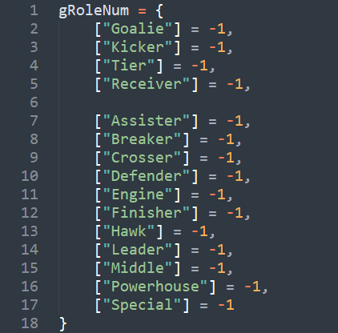
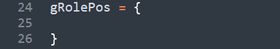
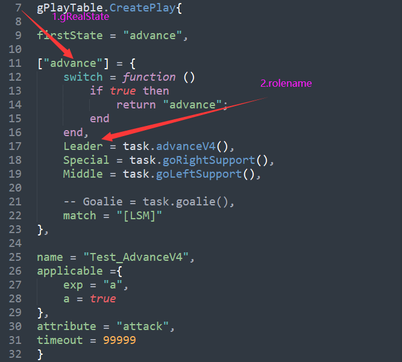
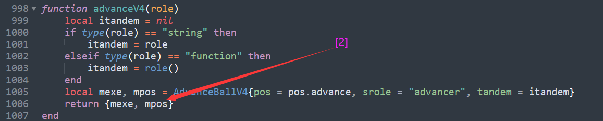
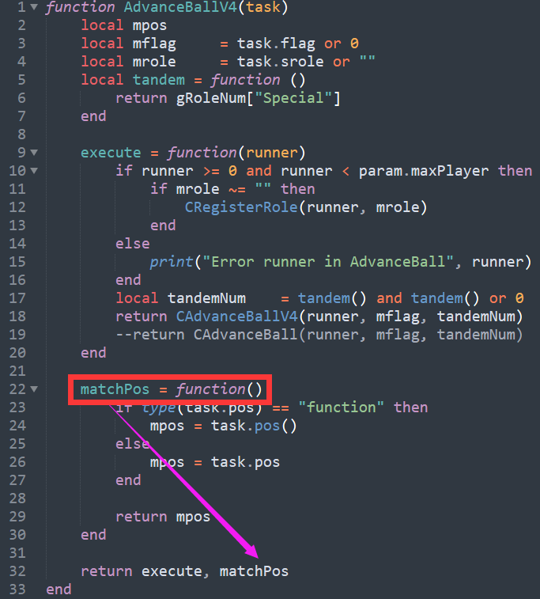

Play¶
有限状态机¶
-
进入一个状态，
-
从World Model中获取信息，判断下一步进入哪个状态
-
动作分配，
-
匹配规则
一个例子：
-- 在实现中，每个状态都是一个Lua的table类型变量，
-- 包括switch，match，Kicker、Goalie（各个角色）这些键
["run1"] = {
-- 状态的跳转函数
switch = function ()
-- 从World Model中获取信息，判断下一步进入哪个状态
if player.toTargetDist("Kicker") < 20 then
return "run2"
end
end,
-- 分配任务，调用封装的SKill
Kicker = task.goCmuRush(TargetPos1, 0),
-- 匹配规则，这样写就是不匹配
match = ""
},
RoleMatch¶
相关文件¶
- bin/lua_scripts/ssl/Config.lua
- bin/lua_scripts/ssl/Play.lua
- bin/lua_scripts/ssl/RoleMatch.lua
相关变量和函数¶
bin/lua_scripts/ssl/RoleMatch.lua¶
| 变量 | 类型 | 含义 | 初始值 |
|---|---|---|---|
| gRoleNum | 表 | 表的键是角色字符串；表的值是实车号码（当值为-1时，代表该角色没有分配小车） |  |
| gRolePos | 表 | 表的键是角色字符串；表的值是角色位置点 |  |
| gOurExistNum | 表 | 表的键和值都是实车号码 |
相关函数¶
| 函数 | 输入值 | 输出值 | 作用 | 注意 |
|---|---|---|---|---|
| GetMatchPotential | 小车号码，角色名字 | 两者相近的指标 | 提供角色匹配的依据 | 目前指标是单纯的距离 |
运行机制¶
-
SSLStrategy.cpp
-
DecisionModule.cpp
-
SelectPlay.lua
-
Play.lua
function DoRolePosMatch(curPlay, isPlaySwitched, isStateSwitched)
-- Ep:
-- gRealState: advance
-- rolename: Leader
-- [2]: MatchPos
-- ():运行函数
gRolePos[rolename] = curPlay[gRealState][rolename][2]()
UpdateRole(curPlay[gRealState].match, isPlaySwitched, isStateSwitched)



- RoleMatch.lua
function UpdateRole(matchTactic, isPlaySwitched, isStateSwitched) DoMunkresMatch(role) function DoMunkresMatch(rolePos) local matrix = Matrix_double_:new_local(nrows, ncols) -- 这个循环得到每一个实车位置到每一个角色位置的评价指标 for row = 1, nrows do for col = 1, ncols do matrix:setValue(row-1, col-1, GetMatchPotential(gOurExistNum[ncolsIndex[col]], rolePos[row])) end end -- Munkres算法求解矩阵 local m = Munkres:new_local() m:solve(matrix) -- 设置角色的车号 local eraseList = {} for row = 1, nrows do for col = 1, ncols do if matrix:getValue(row-1, col-1) == 0 then gRoleNum[rolePos[row]] = gOurExistNum[ncolsIndex[col]] table.insert(eraseList, gOurExistNum[ncolsIndex[col]]) break end end end